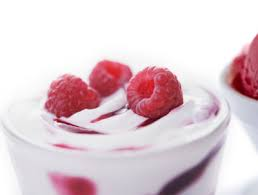

Sản Phẩm Mới
Sữa chua tốt cho sức khỏe
Sữa chua là một loại thực phẩm được tạo ra từ quá trình lên men sữa của các vi khuẩn...
Góc Thành Viên
Sữa Chua Làm Nhà
Học làm sữa chua tại gia cực chuyên gia...
Hướng Dẫn Làm Sữa Chua Không Đường
Nguyên liệu làm sữa chua không đường
- 1 lít sữa tươi không đường
- 1 hộp sữa chua men cái không đường
- Dụng cụ ủ và sữa chua
Các bước thực hiện
- Đun sữa tươi không đường vào nồi, đun nóng lên và khuấy đều...
- Đổ sữa chua men cái vào sữa khuấy đều, sau đó ủ từ 6–8 tiếng.
- Sau khi ủ xong, bảo quản lạnh và dùng dần.